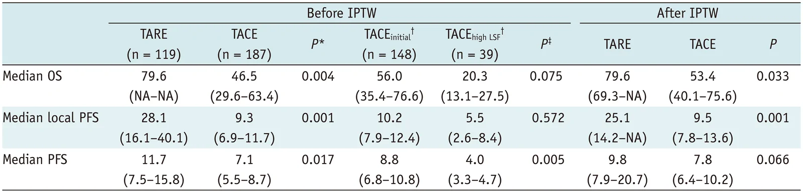
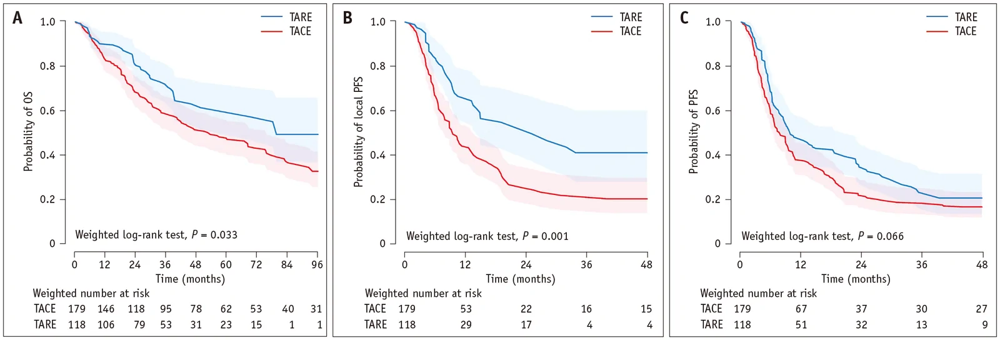
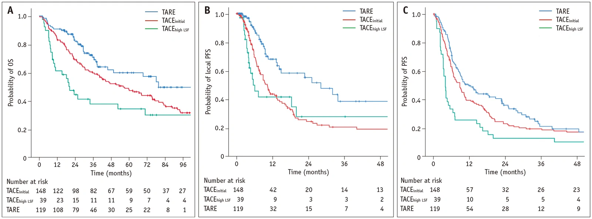
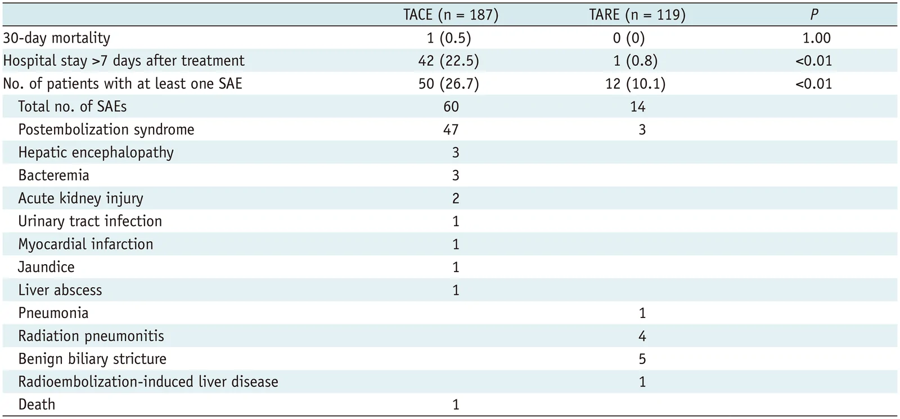

IR Weekly Literature Digest · Full-text analysis
Transarterial Radioembolization Versus Chemoembolization for Unresectable Large Single Hepatocellular Carcinoma.
Korean J Radiol. 2026 Sep 14;27(10):961–72. doi: 10.3348/kjr.2026.0458
Read the original articlePubMedOverview
This single-center retrospective study from Seoul National University Hospital compared TARE (n=119) with TACE (n=187) as first treatment for unresectable solitary HCC of 6 cm or larger without vascular invasion. After IPTW, TARE was associated with longer median OS (79.6 vs 53.4 months, P = 0.033) and local PFS (25.1 vs 9.5 months, P = 0.001), with fewer serious adverse events. The authors stress that TACE patients included 39 who were TARE-ineligible because of high lung shunt. These patients did very poorly (median OS 20.3 months), so lung-shunt-based selection may account for part of the apparent survival advantage of TARE. The local-control and safety signals look more credible than the OS signal.
Study design
Single-center retrospective cohort. Patients treated January 2010 to December 2023. IRB approved with consent waived. 306 patients: 187 TACE and 119 TARE. Primary outcome was OS from initial treatment. Secondary outcomes were PFS, local PFS, best mRECIST response, and SAEs (CTCAE v5.0 grade 3 or higher within 90 days). Analysis used Kaplan-Meier curves with log-rank tests. Confounding was handled by IPTW, with covariates chosen when the absolute SMD exceeded 0.2, followed by weighted log-rank tests. Multivariable Cox regression served as a sensitivity analysis. No randomization or blinding. TARE was not available in 2010-2012, so all patients in those years received TACE.
Patients
Inclusion: first-line TACE or TARE, single HCC with maximum diameter 6 cm or more, age 18 or older, ECOG 0-1, Child-Pugh A or B7. Exclusion: prior resection, ablation or systemic therapy; vascular invasion or extrahepatic disease; other malignancy within 2 years. Median age was 70 years in both groups; about 83% were men. 68% were HBV positive. Tumors larger than 80 mm: 68.9% in TARE vs 60.4% in TACE. Before weighting, TARE patients had better liver function and lower AFP: albumin 4 g/dL or higher in 57.1% vs 39.0%, ALBI grade 1 in 64.7% vs 47.1%, AFP 200 ng/mL or higher in 25.2% vs 42.8%. After IPTW the weighted covariates were balanced (SMD 0 to 0.03).
Intervention and comparator
TARE used Y-90 glass (TheraSphere, 75.6%) or resin (SIR-Spheres, 24.4%) microspheres. Three interventional radiologists performed it. Delivery was as selective as feasible, with frequent boosted dosing and infusion through extrahepatic collaterals. The median number of treated vessels was 3. Treatment was segmental plus subsegmental in 36.1% and segmental alone in 27.7%. Median LSF was 4.1% (2.2-6.6) and median lung dose 8.8 Gy. Dosimetry was retrospective (Simplicit90Y). Median mAD was 231 Gy (169-318), pre-treatment TAD on SPECT/CT 416 Gy (278-588), and post-treatment TAD on PET/CT 582 Gy (374-778). Median tumor volume was 366 mL. The comparator was TACE by eight interventional radiologists: cTACE in 153 patients (doxorubicin up to 50 mg, Lipiodol up to 10 mL, gelatin sponge) and DEB-TACE in 34 (DC Bead 100-300 or 300-500 µm, 25-50 mg doxorubicin per vial). Within the TACE group, 39 patients (20.9%) were planned for TARE but switched because of high estimated lung dose (TACEhigh LSF). The other 148 formed the TACEinitial group.
Results
| Median OS, before IPTW (primary) | TARE 79.6 months (NA-NA) vs TACE 46.5 months (29.6-63.4), P = 0.004. |
|---|---|
| Median OS, after IPTW | TARE 79.6 months (69.3-NA) vs TACE 53.4 months (40.1-75.6), P = 0.033. The survival difference shrank after adjustment, and the confidence intervals overlap. |
| Multivariable Cox for OS | TARE vs TACE: univariable HR 0.580 (0.401-0.840), P = 0.004; multivariable HR 0.624 (0.422-0.924), P = 0.018. Other independent predictors of worse OS were age >70 years (HR 2.697, 1.867-3.896), creatinine >1.2 mg/dL (HR 1.825, 1.176-2.834, P = 0.007), AFP >200 ng/mL (HR 2.108, 1.497-2.970) and PIVKA-II >200 mAU/mL (HR 1.601, 1.008-2.541, P = 0.046). Tumor size >8 cm was not significant (P = 0.074). |
| Local PFS | Before IPTW: TARE 28.1 months (16.1-40.1) vs TACE 9.3 (6.9-11.7), P = 0.001. After IPTW: 25.1 (14.2-NA) vs 9.5 (7.8-13.6), P = 0.001. |
| Overall PFS | Before IPTW: TARE 11.7 months (7.5-15.8) vs TACE 7.1 (5.5-8.7), P = 0.017. After IPTW: 9.8 (7.9-20.7) vs 7.8 (6.4-10.2), P = 0.066, not significant. |
| TACE subgroups (before IPTW) | TACEinitial (n=148) vs TACEhigh LSF (n=39): median OS 56.0 (35.4-76.6) vs 20.3 months (13.1-27.5), P = 0.075. Local PFS 10.2 vs 5.5 months, P = 0.572. PFS 8.8 vs 4.0 months, P = 0.005. The subgroup comparison was not significant for OS, and TARE was not compared with TACEinitial alone. |
| Best response (mRECIST) | TARE: CR 35 (29.4%), PR 69 (58.0%), SD 15 (12.6%). TACE: CR 77 (41.2%), PR 98 (52.4%), SD 4 (2.1%), PD 4 (2.1%), no follow-up imaging 4 (2.1%). No P value reported for response. |
| Subsequent resection | TARE 26 patients (21.8%), done 2-7 months after TARE, vs TACE 13 (7.0%), P < 0.001. Pre-resection response was CR/PR in 9/17 (TARE) and 5/8 (TACE). |
| Safety | At least one SAE: 12 (10.1%) TARE vs 50 (26.7%) TACE, P < 0.01. Hospital stay >7 days: 1 (0.8%) vs 42 (22.5%), P < 0.01. 30-day mortality: 0 vs 1 (0.5%), P = 1.00. |
Key figures




Safety
SAEs were CTCAE v5.0 grade 3 or higher within 90 days, or up to the next treatment. TARE had 14 SAEs in 12 patients. TACE had 60 SAEs in 50 patients, 47 of them postembolization syndrome. Other TACE events: hepatic encephalopathy 3, bacteremia 3, acute kidney injury 2, UTI 1, MI 1, jaundice 1, liver abscess 1, death 1. TARE events: postembolization syndrome 3, pneumonia 1, symptomatic radiation pneumonitis 4 (3.4%, onset 2-5 months, all steroid-responsive), benign biliary stricture 5 (4.2%, onset 1-6 months; 1 PTBD-dependent, 4 ERCP stent), and REILD 1 (0.8%, later died of COVID at 6 months). The 30-day mortality was 1 in TACE and none in TARE. Most TACE SAEs were postembolization syndrome, which is arguably an expected effect rather than a severe complication. TARE toxicities were monitored for 6 months and TACE for 90 days.
Strengths
- Homogeneous population: solitary HCC of 6 cm or more, no vascular invasion, Child-Pugh A/B7, ECOG 0-1, in a setting with limited prior data.
- Relatively large TARE cohort (119) from a high-volume center, with detailed dosimetry including post-treatment PET/CT.
- Explicitly addresses lung-shunt selection bias by identifying TARE-ineligible patients treated with TACE.
- IPTW with SMD-based covariate selection achieved good balance, and a Cox model was used as sensitivity analysis.
- Near-complete survival ascertainment from the national database.
- Local PFS and safety findings are consistent with randomized trials and meta-analyses.
Limitations
- Retrospective single-center design. IPTW balances only measured covariates; unmeasured tumor biology, physician judgment, and cost or access factors remain.
- Selection bias for TARE was acknowledged. The TACE arm included 39 TARE-ineligible high-LSF patients with median OS of 20.3 months. Because IPTW does not account for LSF, the comparison is biased toward TARE. No analysis restricted to TARE-eligible patients (TARE vs TACEinitial) was reported, so the true treatment effect is not separable.
- Immortal-time and era bias: only TACE was available in 2010-2012, and TARE techniques (personalized dosimetry, boosted dose, superselective delivery) evolved. No era adjustment was reported. Follow-up duration is not reported and the TARE median OS upper confidence limit is NA, so the 79.6 months estimate is imprecise.
- The OS benefit is modest and fragile: P = 0.033 after IPTW with overlapping CIs. The overall PFS difference was not significant after IPTW (P = 0.066), which is not emphasized in the conclusions.
- Subsequent therapies (resection in 21.8% vs 7.0%, systemic therapy, repeat locoregional treatment) were not controlled and likely contributed to OS. Resection after TARE may reflect conversion therapy rather than a TARE effect on survival.
- TACE was heterogeneous (84% cTACE, 16% DEB-TACE, eight operators, repeated sessions until CR). TARE used glass and resin spheres with retrospective dosimetry. Response was assessed after repeat treatments, so CR rates are not comparable across arms.
- Adverse-event comparison is imbalanced: different monitoring windows (6 months for TARE-specific events vs 90 days for TACE), and postembolization syndrome dominates TACE SAEs. Cost, quality of life and hospital resource use were not analyzed.
- Baseline table has missing data (e.g. bilirubin, PIVKA), and several covariates (HBV, HCV, alcohol) were not weighted. Tumor size was dichotomized at 80 mm, losing information. The multivariable Cox model was not constructed with prespecified variables, and the TARE-ineligible group was not included as a covariate.
In context
The authors place the results alongside Salem et al. (TTP >26 vs 6.8 months, mostly small BCLC A tumors), the TRACE trial (TTP 17.1 vs 9.5 months with DEB-TACE; OS 30.2 vs 15.6 months, mostly BCLC B) and a recent meta-analysis (OS pooled HR 0.68, 0.55-0.86; PFS HR 0.54, 0.44-0.67). Their OS HR of 0.624 (0.422-0.924) is similar. Unlike earlier studies, which pooled early-stage, multifocal or mixed-stage disease, this cohort is limited to large solitary tumors. A novel point is the lung-shunt selection issue, which previous comparisons did not address. The paradox of a higher TACE CR rate (41.2% vs 29.4%) alongside worse local PFS is compared with TRACE, where response rates were similar despite better progression outcomes with TARE.
Implications for practice
For large solitary HCC in patients who are TARE-eligible (low LSF), this adds retrospective support that TARE gives longer local tumor control, a lower SAE burden and shorter hospitalization than TACE, and that it may enable downstaging to resection. Local PFS (HR-level difference of about 25 vs 9.5 months after IPTW) and safety are the most reliable findings. The OS advantage should not be treated as proven: it is modest, borderline significant after weighting, and likely inflated by comparison against a TACE arm containing high-LSF, biologically aggressive tumors and an early era without TARE. A high LSF on planning angiography with MAA should be considered a prognostic marker as well as a contraindication. Practice change would need confirmation by a prospective trial randomizing patients eligible for both treatments, as the authors propose. Confidence is moderate for local control and toxicity, and low for survival.